Tue, Oct 13, 4:00 PM ET
faith · lilac · topo
Growth is uncomfortable. So is staying the same. 💜 If you’re praying for more, get ready to be stretched for it. What is God stretching you in this season? #P31Marketplace #Proverbs31Woman #FaithAndBusiness #KingdomEntrepreneur #ChristianWomenInBusiness #WomenWhoBuild
Growth is uncomfortable. So is staying the same. 💜 If you’re praying for more, get ready to be stretched for it. What is God stretching you in this season? #P31Marketplace #Proverbs31Woman #FaithAndBusiness #KingdomEntrepreneur
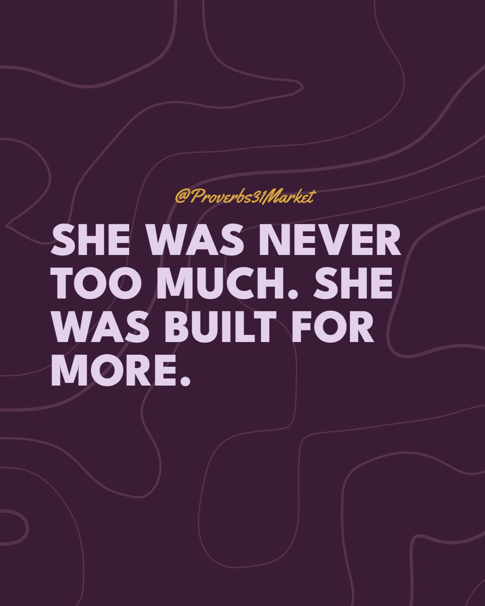
Tue, Oct 13, 8:00 PM ET
faith · plum · topo
To every woman who was told to tone it down: the fire in you was put there on purpose. What are you building that once felt “too big” to say out loud? #P31Marketplace #Proverbs31Woman #FaithAndBusiness #KingdomEntrepreneur #ChristianWomenInBusiness #WomenWhoBuild
To every woman who was told to tone it down: the fire in you was put there on purpose. What are you building that once felt “too big” to say out loud? #P31Marketplace #Proverbs31Woman #FaithAndBusiness #KingdomEntrepreneur
Wed, Oct 14, 3:00 PM ET
curator · olive · dots
Your gift was never meant to stay hidden. ✨ Applications are open to become a P31 curator: your own storefront on p31market.com, a seat at our seasonal Atlanta markets, brand curation, design and coaching, and a community of women who build together. Every curator is hand-selected for craft, story and purpose. Apply today: link in bio #P31Marketplace #WomenOwnedBusiness #AtlantaMakers #ShopSmall #WomenWhoBuild #KingdomEntrepreneur
Your gift was never meant to stay hidden. ✨ Applications are open to become a P31 curator: your own storefront on p31market.com, a seat at our seasonal Atlanta markets, brand curation, design and coaching, and a community of women who build together. Every curator is hand-selected for craft, story and purpose. Apply today: https://www.p31market.com/apply #P31Marketplace #WomenOwnedBusiness #AtlantaMakers #ShopSmall
Wed, Oct 14, 7:30 PM ET
faith · thistle · rings
The wait is not wasted. God is working on the details you can’t see yet. If you’re still building through a delay, comment “still building” and let us cheer you on. 🧱 #P31Marketplace #Proverbs31Woman #FaithAndBusiness #KingdomEntrepreneur #ChristianWomenInBusiness #WomenWhoBuild
The wait is not wasted. God is working on the details you can’t see yet. If you’re still building through a delay, comment “still building” and let us cheer you on. 🧱 #P31Marketplace #Proverbs31Woman #FaithAndBusiness #KingdomEntrepreneur
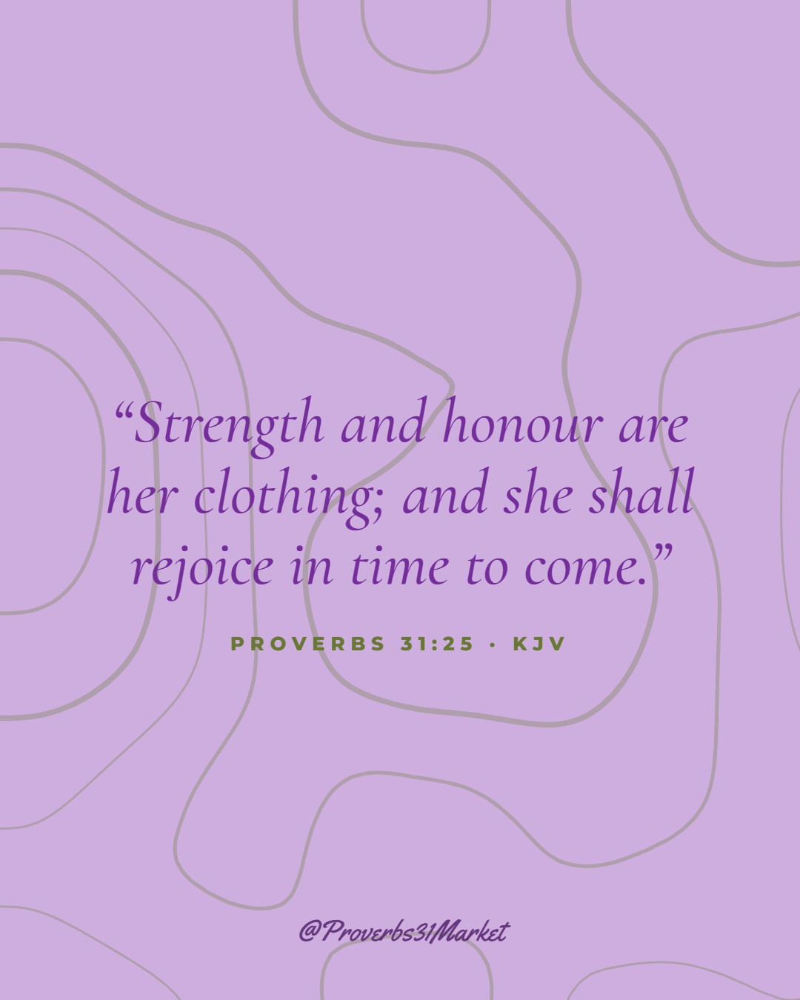
Thu, Oct 15, 12:30 PM ET
scripture · lilac · topo
Strength and honour are her clothing. Not worry. Not fear. Strength and honour. What would you do differently this week if you dressed in strength every morning? #P31Marketplace #Proverbs31 #ScriptureForToday #KJV #Proverbs31Woman #FaithOverFear
Strength and honour are her clothing. Not worry. Not fear. Strength and honour. What would you do differently this week if you dressed in strength every morning? #P31Marketplace #Proverbs31 #ScriptureForToday #KJV
Thu, Oct 15, 7:30 PM ET
faith · gold · topo
Every product, every client, every post can carry purpose. How does your business serve people beyond the sale? We’d love to hear it. #P31Marketplace #Proverbs31Woman #FaithAndBusiness #KingdomEntrepreneur #ChristianWomenInBusiness #WomenWhoBuild
Every product, every client, every post can carry purpose. How does your business serve people beyond the sale? We’d love to hear it. #P31Marketplace #Proverbs31Woman #FaithAndBusiness #KingdomEntrepreneur
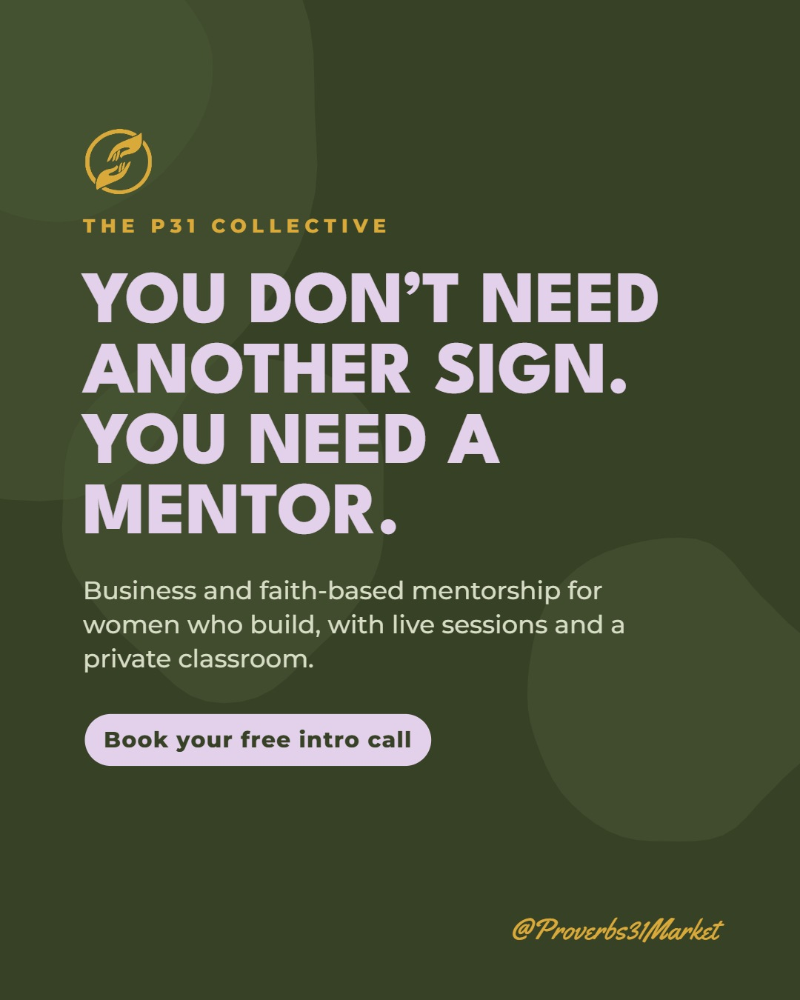
Fri, Oct 16, 3:30 PM ET
mentorship · green · blobs
Some of you are not waiting on a sign. You’re waiting on a mentor. 💜 The P31 Collective by NEBA is private mentorship for faith-driven women entrepreneurs: business mentorship and faith-based mentorship, with live sessions and a classroom built for you. It starts with a free intro call: link in bio #P31Collective #KingdomEntrepreneur #WomenInBusiness #FaithAndBusiness #MentorshipMatters #P31Marketplace
Some of you are not waiting on a sign. You’re waiting on a mentor. 💜 The P31 Collective by NEBA is private mentorship for faith-driven women entrepreneurs: business mentorship and faith-based mentorship, with live sessions and a classroom built for you. It starts with a free intro call: https://www.thep31collective.org/join #P31Collective #KingdomEntrepreneur #WomenInBusiness #FaithAndBusiness
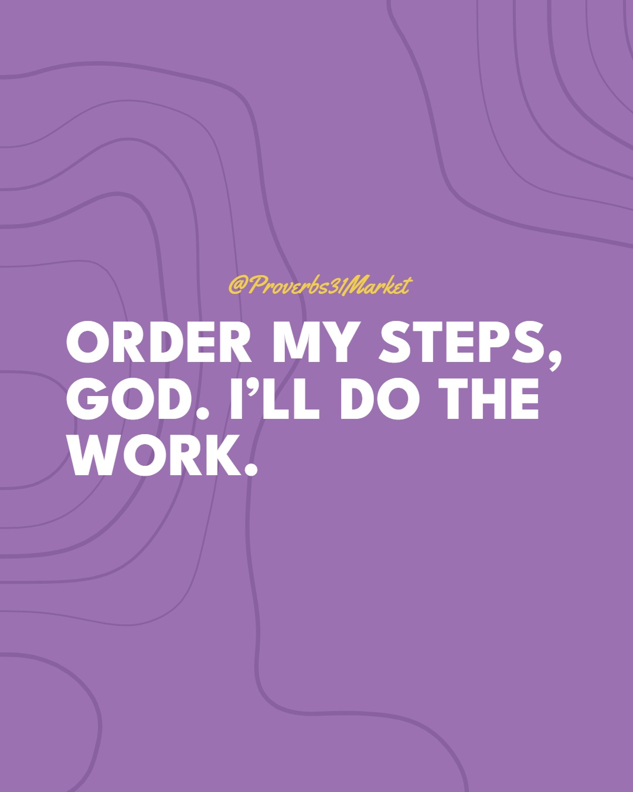
Fri, Oct 16, 7:30 PM ET
faith · amethyst · topo
Faith and work were always meant to walk together. What’s one step you’re taking this week, trusting God with the rest? #P31Marketplace #Proverbs31Woman #FaithAndBusiness #KingdomEntrepreneur #ChristianWomenInBusiness #WomenWhoBuild
Faith and work were always meant to walk together. What’s one step you’re taking this week, trusting God with the rest? #P31Marketplace #Proverbs31Woman #FaithAndBusiness #KingdomEntrepreneur
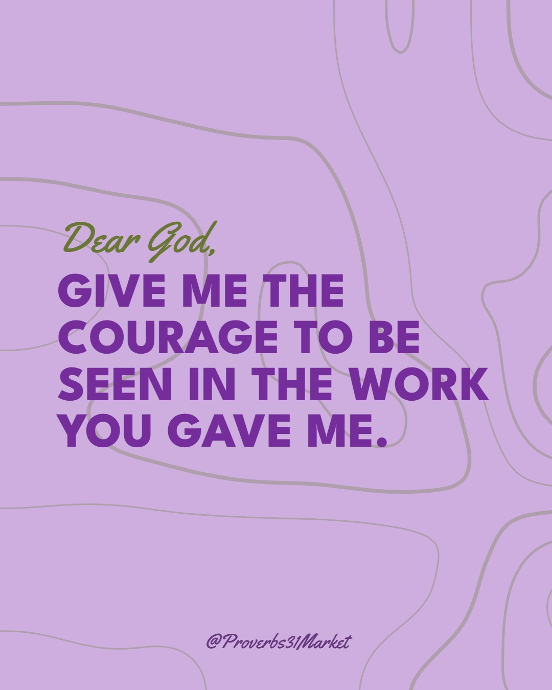
Sat, Oct 17, 1:00 PM ET
faith · lilac · topo
Hiding your gift doesn’t make it safer. It just keeps it from the people it was meant for. If this is your prayer today, comment Amen. 🙏🏾 #P31Marketplace #Proverbs31Woman #FaithAndBusiness #KingdomEntrepreneur #ChristianWomenInBusiness #WomenWhoBuild
Hiding your gift doesn’t make it safer. It just keeps it from the people it was meant for. If this is your prayer today, comment Amen. 🙏🏾 #P31Marketplace #Proverbs31Woman #FaithAndBusiness #KingdomEntrepreneur
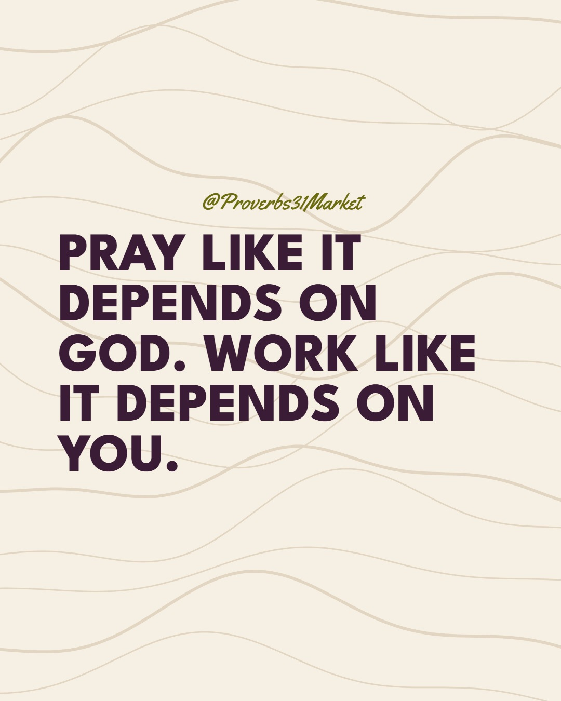
Sat, Oct 17, 8:30 PM ET
faith · ivory · waves
Both. Always both. 💼🙏🏾 Which one comes easier for you, the praying or the working? #P31Marketplace #Proverbs31Woman #FaithAndBusiness #KingdomEntrepreneur #ChristianWomenInBusiness #WomenWhoBuild
Both. Always both. 💼🙏🏾 Which one comes easier for you, the praying or the working? #P31Marketplace #Proverbs31Woman #FaithAndBusiness #KingdomEntrepreneur
Sun, Oct 18, 1:00 PM ET
curator · royal · topo
Your shop. Your story. Our sisterhood. 🛍️ P31 curators get their own storefront on p31market.com and a seat at our seasonal Atlanta markets, plus coaching and a community that builds together. Woman-led brand with a gift to share? Apply: link in bio #P31Marketplace #WomenOwnedBusiness #AtlantaMakers #ShopSmall #WomenWhoBuild #KingdomEntrepreneur
Your shop. Your story. Our sisterhood. 🛍️ P31 curators get their own storefront on p31market.com and a seat at our seasonal Atlanta markets, plus coaching and a community that builds together. Woman-led brand with a gift to share? Apply: https://www.p31market.com/apply #P31Marketplace #WomenOwnedBusiness #AtlantaMakers #ShopSmall
Sun, Oct 18, 9:00 PM ET
faith · sage · topo
And there’s room at it for the women coming after you. What are you building that you want to pass on? #P31Marketplace #Proverbs31Woman #FaithAndBusiness #KingdomEntrepreneur #ChristianWomenInBusiness #WomenWhoBuild
And there’s room at it for the women coming after you. What are you building that you want to pass on? #P31Marketplace #Proverbs31Woman #FaithAndBusiness #KingdomEntrepreneur
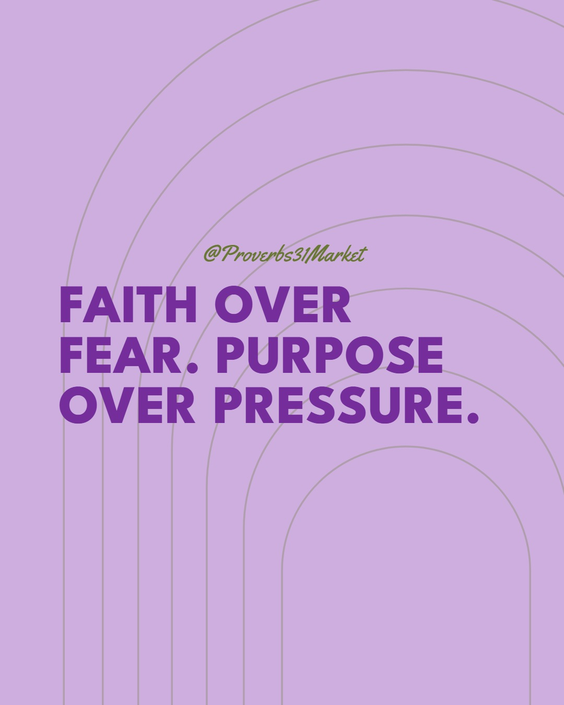
Mon, Oct 19, 12:30 PM ET
faith · lilac · arches
Pressure says hurry. Purpose says obey. Which one have you been listening to lately? #P31Marketplace #Proverbs31Woman #FaithAndBusiness #KingdomEntrepreneur #ChristianWomenInBusiness #WomenWhoBuild
Pressure says hurry. Purpose says obey. Which one have you been listening to lately? #P31Marketplace #Proverbs31Woman #FaithAndBusiness #KingdomEntrepreneur
Mon, Oct 19, 9:00 PM ET
scripture · blush · topo
Your gift makes room. You don’t have to force the door. What is the gift God has placed in your hands? Tell us below. 💜 #P31Marketplace #Proverbs31 #ScriptureForToday #KJV #Proverbs31Woman #FaithOverFear
Your gift makes room. You don’t have to force the door. What is the gift God has placed in your hands? Tell us below. 💜 #P31Marketplace #Proverbs31 #ScriptureForToday #KJV
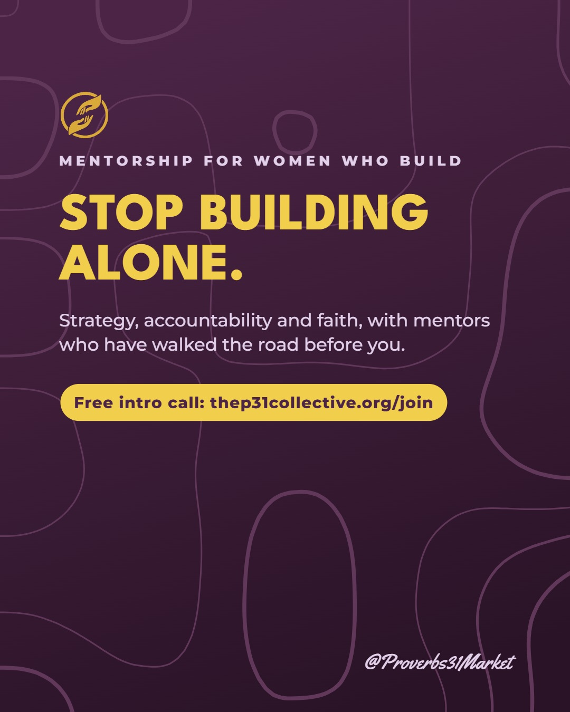
Tue, Oct 20, 12:30 PM ET
mentorship · dusk · topo
You were never meant to build alone. 🤝 The P31 Collective pairs faith-driven women entrepreneurs with mentorship for the business and the heart behind it: live sessions, a private classroom and women who’ve walked the road. Start with a free intro call: link in bio #P31Collective #KingdomEntrepreneur #WomenInBusiness #FaithAndBusiness #MentorshipMatters #P31Marketplace
You were never meant to build alone. 🤝 The P31 Collective pairs faith-driven women entrepreneurs with mentorship for the business and the heart behind it: live sessions, a private classroom and women who’ve walked the road. Start with a free intro call: https://www.thep31collective.org/join #P31Collective #KingdomEntrepreneur #WomenInBusiness #FaithAndBusiness
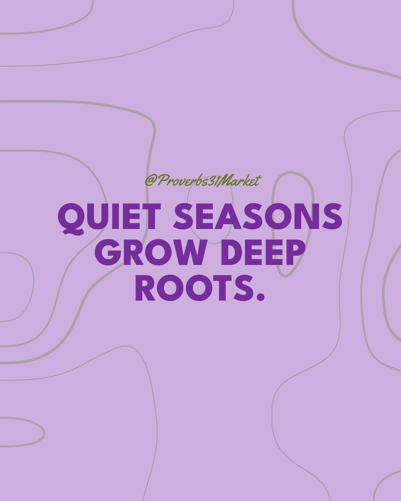
Tue, Oct 20, 7:30 PM ET
faith · lilac · topo
If it feels slow right now, look down. Something is growing. What has a quiet season taught you? #P31Marketplace #Proverbs31Woman #FaithAndBusiness #KingdomEntrepreneur #ChristianWomenInBusiness #WomenWhoBuild
If it feels slow right now, look down. Something is growing. What has a quiet season taught you? #P31Marketplace #Proverbs31Woman #FaithAndBusiness #KingdomEntrepreneur
Wed, Oct 21, 12:30 PM ET
faith · plum · topo
That closed door may be the most loving thing God did for your business this year. Has a “no” ever led you somewhere better? #P31Marketplace #Proverbs31Woman #FaithAndBusiness #KingdomEntrepreneur #ChristianWomenInBusiness #WomenWhoBuild
That closed door may be the most loving thing God did for your business this year. Has a “no” ever led you somewhere better? #P31Marketplace #Proverbs31Woman #FaithAndBusiness #KingdomEntrepreneur
Wed, Oct 21, 5:30 PM ET
faith · olive · dots
Outgrowing a place is not ungratefulness. It’s growth. Comment “growing” if you feel this one. 🌱 #P31Marketplace #Proverbs31Woman #FaithAndBusiness #KingdomEntrepreneur #ChristianWomenInBusiness #WomenWhoBuild
Outgrowing a place is not ungratefulness. It’s growth. Comment “growing” if you feel this one. 🌱 #P31Marketplace #Proverbs31Woman #FaithAndBusiness #KingdomEntrepreneur
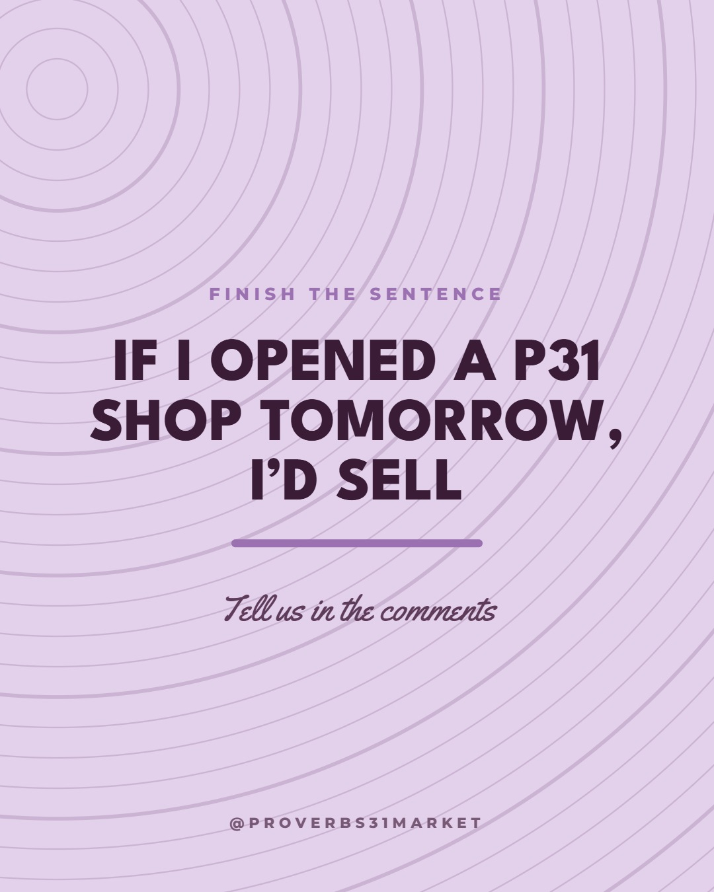
Thu, Oct 22, 3:30 PM ET
curator · thistle · rings
Dream with us for a second. ✨ If you opened a shop on the P31 Marketplace tomorrow, what would you sell? Tell us below. And if you’re serious about it, curator applications are open: link in bio #P31Marketplace #WomenOwnedBusiness #AtlantaMakers #ShopSmall #WomenWhoBuild #KingdomEntrepreneur
Dream with us for a second. ✨ If you opened a shop on the P31 Marketplace tomorrow, what would you sell? Tell us below. And if you’re serious about it, curator applications are open: https://www.p31market.com/apply #P31Marketplace #WomenOwnedBusiness #AtlantaMakers #ShopSmall
Thu, Oct 22, 7:30 PM ET
faith · lilac · topo
The post you’re nervous to share, the product you’re scared to launch, someone needs it. What is God asking you to release? #P31Marketplace #Proverbs31Woman #FaithAndBusiness #KingdomEntrepreneur #ChristianWomenInBusiness #WomenWhoBuild
The post you’re nervous to share, the product you’re scared to launch, someone needs it. What is God asking you to release? #P31Marketplace #Proverbs31Woman #FaithAndBusiness #KingdomEntrepreneur
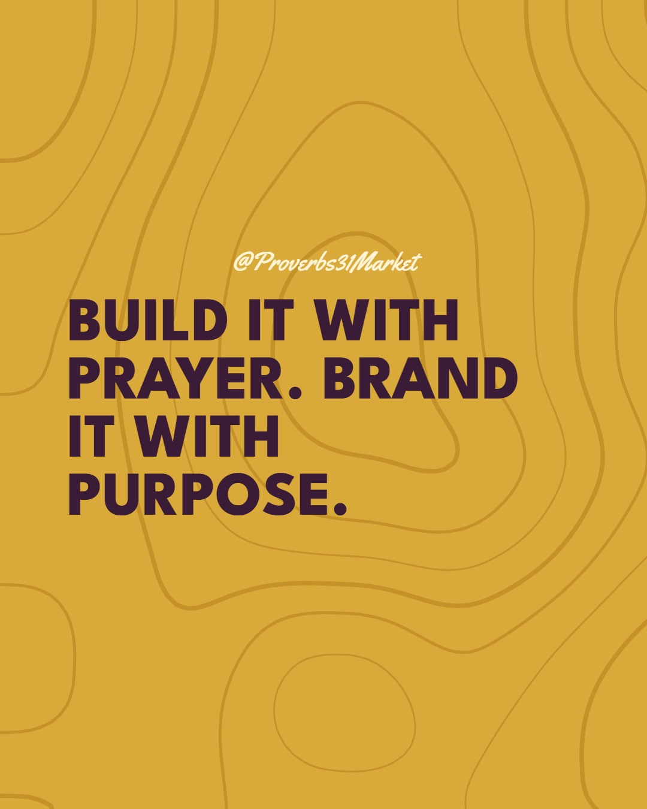
Fri, Oct 23, 12:30 PM ET
faith · gold · topo
Your logo matters. Your why matters more. In one sentence, why does your business exist? Drop it below. #P31Marketplace #Proverbs31Woman #FaithAndBusiness #KingdomEntrepreneur #ChristianWomenInBusiness #WomenWhoBuild
Your logo matters. Your why matters more. In one sentence, why does your business exist? Drop it below. #P31Marketplace #Proverbs31Woman #FaithAndBusiness #KingdomEntrepreneur
Fri, Oct 23, 5:30 PM ET
faith · green · blobs
Comparison will tell you you’re late. God’s timing says otherwise. If you needed this reminder today, comment Amen. 🙏🏾 #P31Marketplace #Proverbs31Woman #FaithAndBusiness #KingdomEntrepreneur #ChristianWomenInBusiness #WomenWhoBuild
Comparison will tell you you’re late. God’s timing says otherwise. If you needed this reminder today, comment Amen. 🙏🏾 #P31Marketplace #Proverbs31Woman #FaithAndBusiness #KingdomEntrepreneur
Sat, Oct 24, 1:00 PM ET
mentorship · amethyst · topo
“Write the vision, and make it plain.” Habakkuk 2:2 A vision without a plan stays a dream. Business mentorship in the P31 Collective gives you live sessions, a private classroom and accountability to build it out. It starts with a free intro call: link in bio #P31Collective #KingdomEntrepreneur #WomenInBusiness #FaithAndBusiness #MentorshipMatters #P31Marketplace
“Write the vision, and make it plain.” Habakkuk 2:2 A vision without a plan stays a dream. Business mentorship in the P31 Collective gives you live sessions, a private classroom and accountability to build it out. It starts with a free intro call: https://www.thep31collective.org/join #P31Collective #KingdomEntrepreneur #WomenInBusiness #FaithAndBusiness
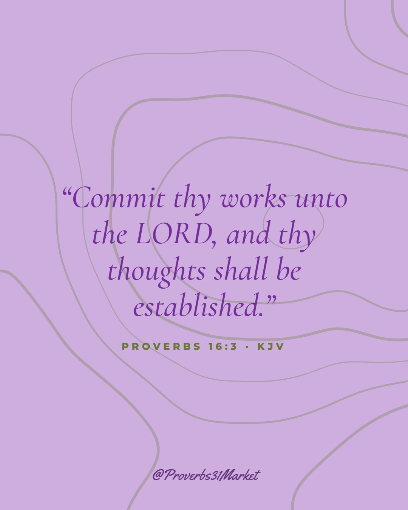
Sat, Oct 24, 8:30 PM ET
scripture · lilac · topo
Before the plan, the prayer. 🙏🏾 What work are you committing to the Lord this week? Name it below and let us pray with you. #P31Marketplace #Proverbs31 #ScriptureForToday #KJV #Proverbs31Woman #FaithOverFear
Before the plan, the prayer. 🙏🏾 What work are you committing to the Lord this week? Name it below and let us pray with you. #P31Marketplace #Proverbs31 #ScriptureForToday #KJV
Sun, Oct 25, 4:00 PM ET
faith · ivory · waves
All three. No apologies. 👑 Which one are you growing in right now? #P31Marketplace #Proverbs31Woman #FaithAndBusiness #KingdomEntrepreneur #ChristianWomenInBusiness #WomenWhoBuild
All three. No apologies. 👑 Which one are you growing in right now? #P31Marketplace #Proverbs31Woman #FaithAndBusiness #KingdomEntrepreneur
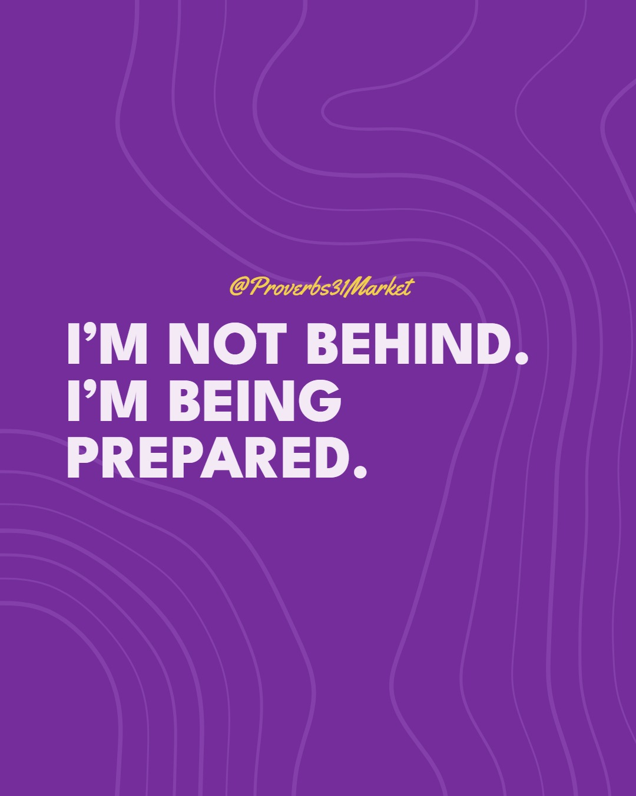
Sun, Oct 25, 7:30 PM ET
faith · royal · topo
Preparation is not punishment. It’s protection for what’s coming. What is God preparing you for? #P31Marketplace #Proverbs31Woman #FaithAndBusiness #KingdomEntrepreneur #ChristianWomenInBusiness #WomenWhoBuild
Preparation is not punishment. It’s protection for what’s coming. What is God preparing you for? #P31Marketplace #Proverbs31Woman #FaithAndBusiness #KingdomEntrepreneur
Mon, Oct 26, 12:30 PM ET
curator · sage · topo
Calling the makers, the bakers and the builders. 🧁💍📚 The P31 Marketplace is home to women-led brands: handmade goods, jewelry, wellness, treats, books and journals, home decor and services. Your own storefront, our seasonal Atlanta markets, coaching and community. Apply to become a curator: link in bio #P31Marketplace #WomenOwnedBusiness #AtlantaMakers #ShopSmall #WomenWhoBuild #KingdomEntrepreneur
Calling the makers, the bakers and the builders. 🧁💍📚 The P31 Marketplace is home to women-led brands: handmade goods, jewelry, wellness, treats, books and journals, home decor and services. Your own storefront, our seasonal Atlanta markets, coaching and community. Apply to become a curator: https://www.p31market.com/apply #P31Marketplace #WomenOwnedBusiness #AtlantaMakers #ShopSmall
Mon, Oct 26, 9:00 PM ET
faith · lilac · arches
Ready is a feeling. Called is a fact. What would you start this week if you stopped waiting? #P31Marketplace #Proverbs31Woman #FaithAndBusiness #KingdomEntrepreneur #ChristianWomenInBusiness #WomenWhoBuild
Ready is a feeling. Called is a fact. What would you start this week if you stopped waiting? #P31Marketplace #Proverbs31Woman #FaithAndBusiness #KingdomEntrepreneur
Tue, Oct 27, 12:30 PM ET
faith · blush · topo
Nothing you went through was wasted. You carry wisdom into this next chapter. What did your last season teach you that you’re bringing with you? #P31Marketplace #Proverbs31Woman #FaithAndBusiness #KingdomEntrepreneur #ChristianWomenInBusiness #WomenWhoBuild
Nothing you went through was wasted. You carry wisdom into this next chapter. What did your last season teach you that you’re bringing with you? #P31Marketplace #Proverbs31Woman #FaithAndBusiness #KingdomEntrepreneur
Tue, Oct 27, 5:30 PM ET
faith · dusk · topo
Big moments get attention. Consistent days build the business. What’s one thing you’re committing to show up for daily? #P31Marketplace #Proverbs31Woman #FaithAndBusiness #KingdomEntrepreneur #ChristianWomenInBusiness #WomenWhoBuild
Big moments get attention. Consistent days build the business. What’s one thing you’re committing to show up for daily? #P31Marketplace #Proverbs31Woman #FaithAndBusiness #KingdomEntrepreneur
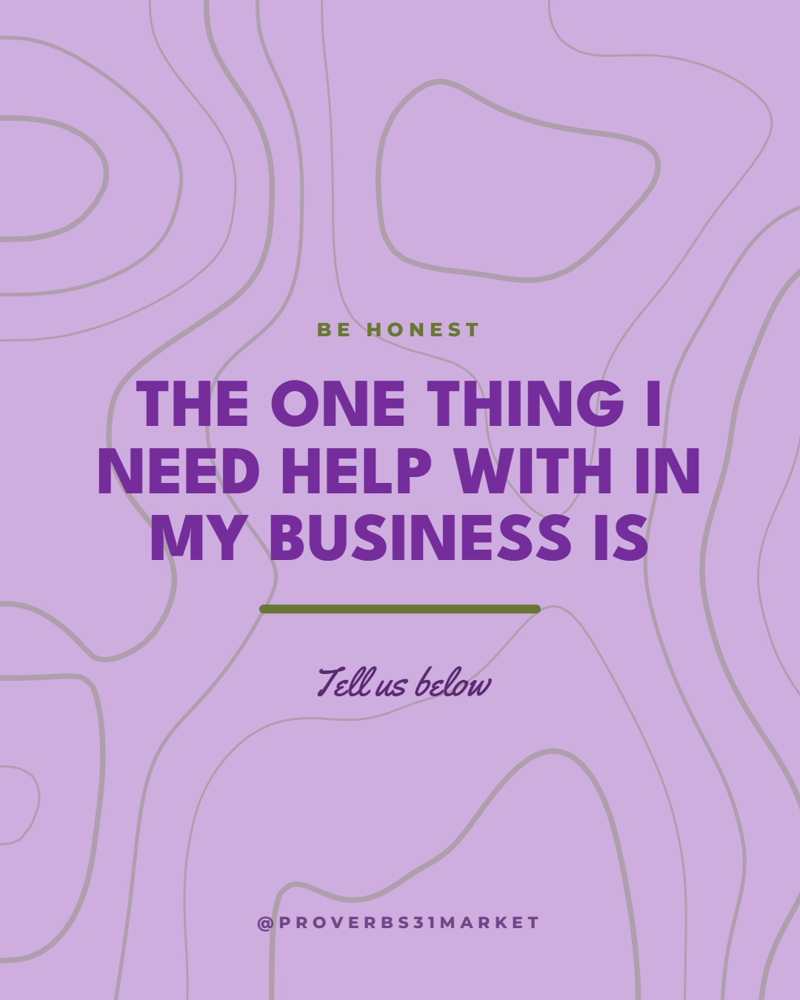
Wed, Oct 28, 3:00 PM ET
mentorship · lilac · topo
No judgment here. 💜 What’s the one thing you need help with in your business right now? Pricing, marketing, time, faith, focus? Tell us below. This is the work we do together in the P31 Collective. Start with a free intro call: link in bio #P31Collective #KingdomEntrepreneur #WomenInBusiness #FaithAndBusiness #MentorshipMatters #P31Marketplace
No judgment here. 💜 What’s the one thing you need help with in your business right now? Pricing, marketing, time, faith, focus? Tell us below. This is the work we do together in the P31 Collective. Start with a free intro call: https://www.thep31collective.org/join #P31Collective #KingdomEntrepreneur #WomenInBusiness #FaithAndBusiness
Wed, Oct 28, 7:30 PM ET
faith · plum · topo
You don’t need all the answers today. Just enough grace for the next step. What is one thing you’re thankful for in your business today? #P31Marketplace #Proverbs31Woman #FaithAndBusiness #KingdomEntrepreneur #ChristianWomenInBusiness #WomenWhoBuild
You don’t need all the answers today. Just enough grace for the next step. What is one thing you’re thankful for in your business today? #P31Marketplace #Proverbs31Woman #FaithAndBusiness #KingdomEntrepreneur
Thu, Oct 29, 12:30 PM ET
scripture · olive · dots
Write it down. Make it plain. Then run with it. ✍🏾 What is one line of the vision God gave you? Write it in the comments. #P31Marketplace #Proverbs31 #ScriptureForToday #KJV #Proverbs31Woman #FaithOverFear
Write it down. Make it plain. Then run with it. ✍🏾 What is one line of the vision God gave you? Write it in the comments. #P31Marketplace #Proverbs31 #ScriptureForToday #KJV
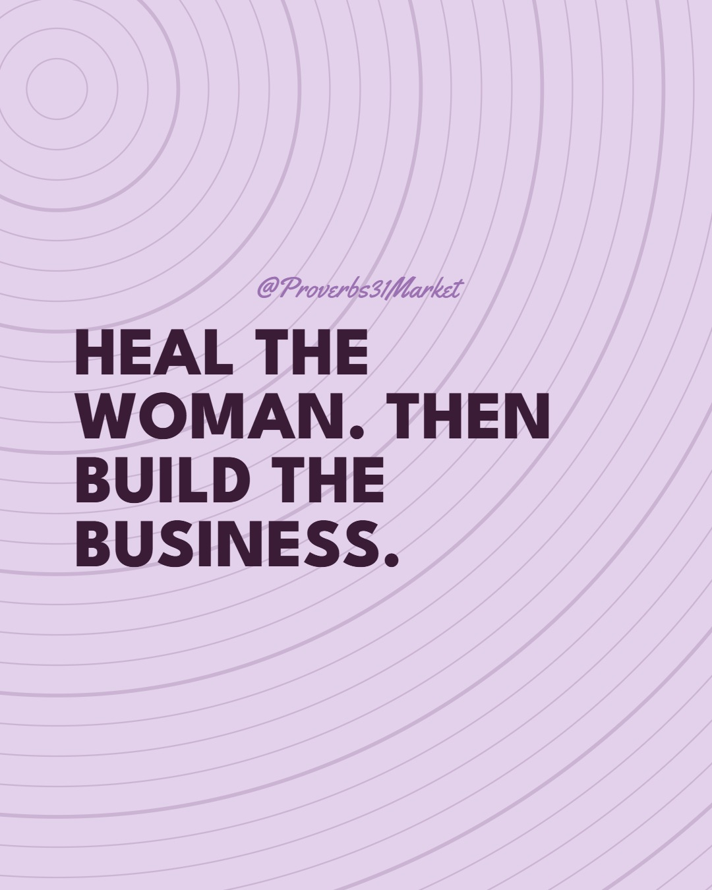
Thu, Oct 29, 5:30 PM ET
faith · thistle · rings
Your business can only grow as healthy as the woman leading it. How are you taking care of you this week? #P31Marketplace #Proverbs31Woman #FaithAndBusiness #KingdomEntrepreneur #ChristianWomenInBusiness #WomenWhoBuild
Your business can only grow as healthy as the woman leading it. How are you taking care of you this week? #P31Marketplace #Proverbs31Woman #FaithAndBusiness #KingdomEntrepreneur
Fri, Oct 30, 3:30 PM ET
curator · lilac · topo
Room is being made for you. 💜 We hand-select every P31 curator for craft, story and purpose. Curators get a storefront on p31market.com, a seat at our seasonal Atlanta markets, coaching and a community of women who build together. Apply today: link in bio #P31Marketplace #WomenOwnedBusiness #AtlantaMakers #ShopSmall #WomenWhoBuild #KingdomEntrepreneur
Room is being made for you. 💜 We hand-select every P31 curator for craft, story and purpose. Curators get a storefront on p31market.com, a seat at our seasonal Atlanta markets, coaching and a community of women who build together. Apply today: https://www.p31market.com/apply #P31Marketplace #WomenOwnedBusiness #AtlantaMakers #ShopSmall
Fri, Oct 30, 7:30 PM ET
faith · gold · topo
Age, setbacks, starting late. None of it cancels the call. If you’re starting something new this year, tell us what it is. 👇🏾 #P31Marketplace #Proverbs31Woman #FaithAndBusiness #KingdomEntrepreneur #ChristianWomenInBusiness #WomenWhoBuild
Age, setbacks, starting late. None of it cancels the call. If you’re starting something new this year, tell us what it is. 👇🏾 #P31Marketplace #Proverbs31Woman #FaithAndBusiness #KingdomEntrepreneur
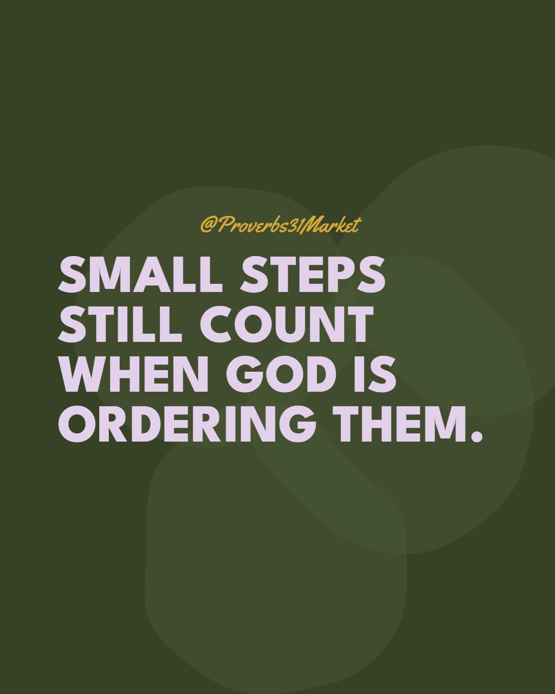
Sat, Oct 31, 1:00 PM ET
faith · green · blobs
Progress is progress. Celebrate it. What small win did you have this week? #P31Marketplace #Proverbs31Woman #FaithAndBusiness #KingdomEntrepreneur #ChristianWomenInBusiness #WomenWhoBuild
Progress is progress. Celebrate it. What small win did you have this week? #P31Marketplace #Proverbs31Woman #FaithAndBusiness #KingdomEntrepreneur
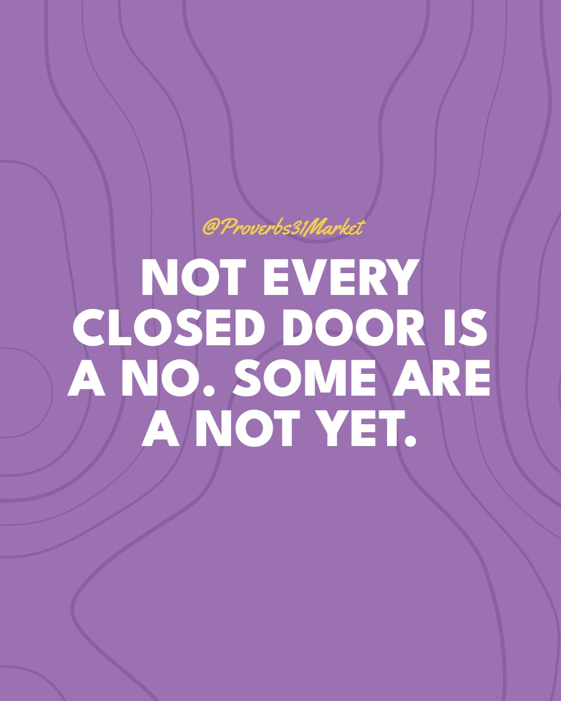
Sat, Oct 31, 8:30 PM ET
faith · amethyst · topo
Keep knocking. Keep preparing. Keep believing. What “not yet” are you still believing for? #P31Marketplace #Proverbs31Woman #FaithAndBusiness #KingdomEntrepreneur #ChristianWomenInBusiness #WomenWhoBuild
Keep knocking. Keep preparing. Keep believing. What “not yet” are you still believing for? #P31Marketplace #Proverbs31Woman #FaithAndBusiness #KingdomEntrepreneur
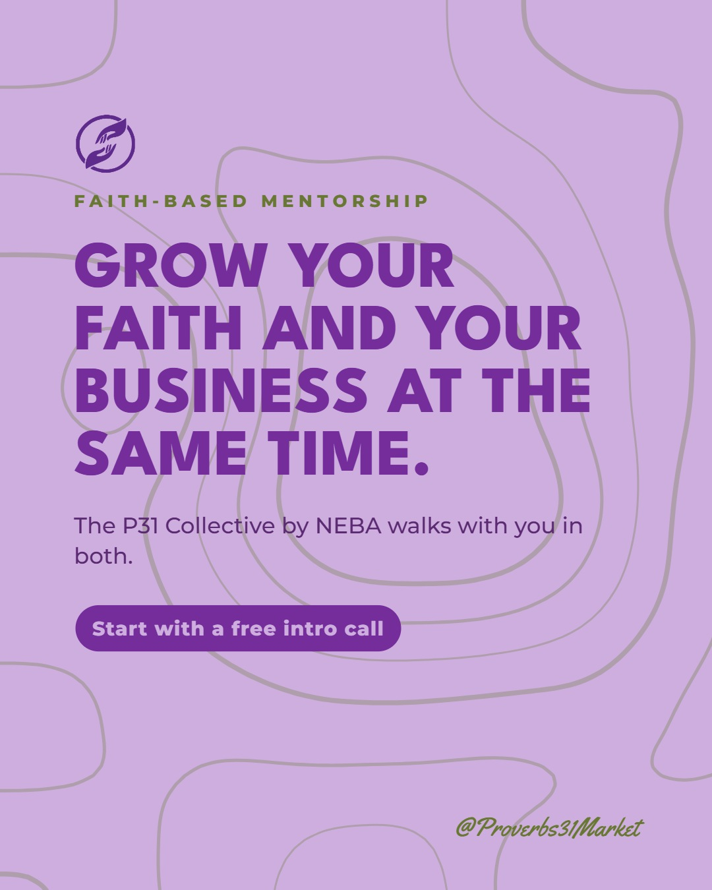
Sun, Nov 1, 4:00 PM ET
mentorship · lilac · topo
You don’t have to choose between your faith and your business. 🙏🏾💼 The P31 Collective offers faith-based mentorship and business mentorship for women who build, with live sessions and a private classroom. It starts with a free intro call: link in bio #P31Collective #KingdomEntrepreneur #WomenInBusiness #FaithAndBusiness #MentorshipMatters #P31Marketplace
You don’t have to choose between your faith and your business. 🙏🏾💼 The P31 Collective offers faith-based mentorship and business mentorship for women who build, with live sessions and a private classroom. It starts with a free intro call: https://www.thep31collective.org/join #P31Collective #KingdomEntrepreneur #WomenInBusiness #FaithAndBusiness
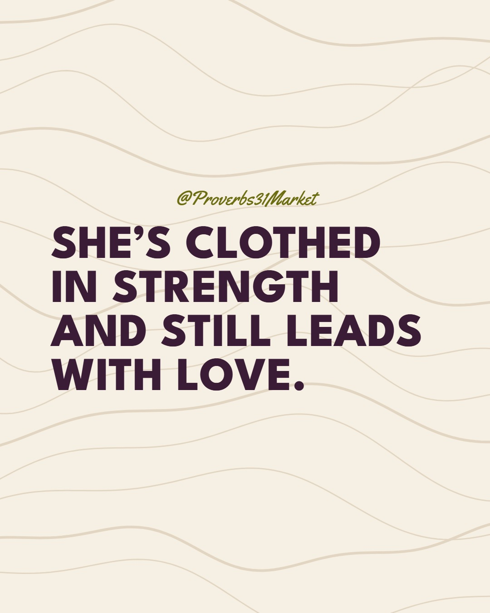
Sun, Nov 1, 7:30 PM ET
faith · ivory · waves
Strength and softness can live in the same woman. Who is a woman that leads like this in your life? #P31Marketplace #Proverbs31Woman #FaithAndBusiness #KingdomEntrepreneur #ChristianWomenInBusiness #WomenWhoBuild
Strength and softness can live in the same woman. Who is a woman that leads like this in your life? #P31Marketplace #Proverbs31Woman #FaithAndBusiness #KingdomEntrepreneur
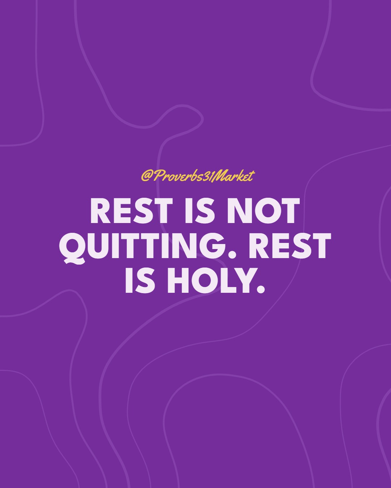
Mon, Nov 2, 12:30 PM ET
faith · royal · topo
Even God rested. Your business will be better for it. How do you rest well? Share your favorite way below. #P31Marketplace #Proverbs31Woman #FaithAndBusiness #KingdomEntrepreneur #ChristianWomenInBusiness #WomenWhoBuild
Even God rested. Your business will be better for it. How do you rest well? Share your favorite way below. #P31Marketplace #Proverbs31Woman #FaithAndBusiness #KingdomEntrepreneur
Mon, Nov 2, 9:00 PM ET
scripture · sage · topo
Far above rubies. That is the worth God places on you. 💎 If you needed the reminder today, comment Amen. #P31Marketplace #Proverbs31 #ScriptureForToday #KJV #Proverbs31Woman #FaithOverFear
Far above rubies. That is the worth God places on you. 💎 If you needed the reminder today, comment Amen. #P31Marketplace #Proverbs31 #ScriptureForToday #KJV
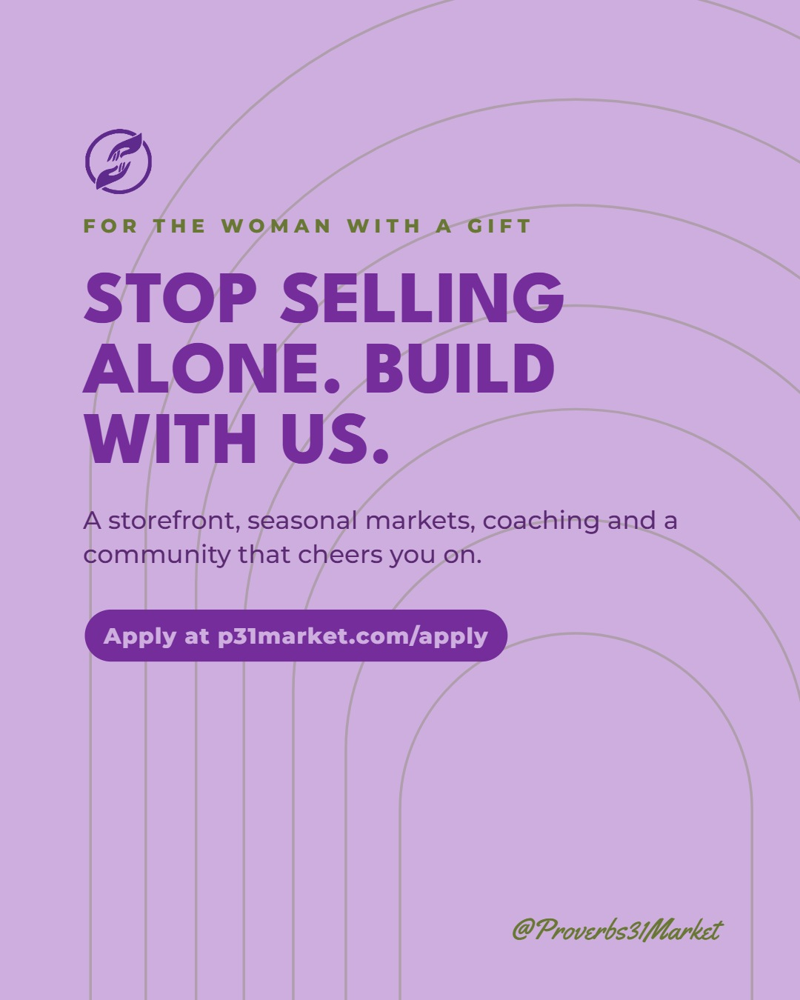
Tue, Nov 3, 12:30 PM ET
curator · lilac · arches
Selling alone is exhausting. Building together is different. 🤝 As a P31 curator you get a storefront on p31market.com, a seat at our seasonal Atlanta markets, coaching and a sisterhood that cheers you on. Apply to become a curator: link in bio #P31Marketplace #WomenOwnedBusiness #AtlantaMakers #ShopSmall #WomenWhoBuild #KingdomEntrepreneur
Selling alone is exhausting. Building together is different. 🤝 As a P31 curator you get a storefront on p31market.com, a seat at our seasonal Atlanta markets, coaching and a sisterhood that cheers you on. Apply to become a curator: https://www.p31market.com/apply #P31Marketplace #WomenOwnedBusiness #AtlantaMakers #ShopSmall
Tue, Nov 3, 5:30 PM ET
faith · blush · topo
Philippians 1:6 is still true on the hard days. What has God started in you that you’re trusting Him to finish? #P31Marketplace #Proverbs31Woman #FaithAndBusiness #KingdomEntrepreneur #ChristianWomenInBusiness #WomenWhoBuild
Philippians 1:6 is still true on the hard days. What has God started in you that you’re trusting Him to finish? #P31Marketplace #Proverbs31Woman #FaithAndBusiness #KingdomEntrepreneur
Wed, Nov 4, 3:00 PM ET
faith · dusk · topo
Success is a blessing. Humility keeps it one. If this is your prayer too, comment Amen. 🙏🏾 #P31Marketplace #Proverbs31Woman #FaithAndBusiness #KingdomEntrepreneur #ChristianWomenInBusiness #WomenWhoBuild
Success is a blessing. Humility keeps it one. If this is your prayer too, comment Amen. 🙏🏾 #P31Marketplace #Proverbs31Woman #FaithAndBusiness #KingdomEntrepreneur
Wed, Nov 4, 7:30 PM ET
faith · lilac · topo
The door opens for the one who keeps knocking. What’s the gift you’re showing up with this week? #P31Marketplace #Proverbs31Woman #FaithAndBusiness #KingdomEntrepreneur #ChristianWomenInBusiness #WomenWhoBuild
The door opens for the one who keeps knocking. What’s the gift you’re showing up with this week? #P31Marketplace #Proverbs31Woman #FaithAndBusiness #KingdomEntrepreneur
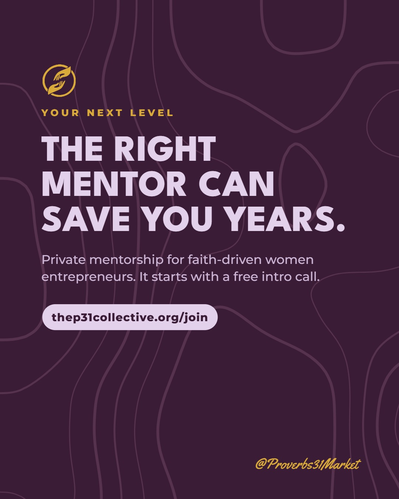
Thu, Nov 5, 12:30 PM ET
mentorship · plum · topo
Some lessons you can learn the hard way. Or you can learn them from someone who already did. 💡 The P31 Collective by NEBA: business and faith-based mentorship for women who build, with live sessions and a private classroom. Book your free intro call: link in bio #P31Collective #KingdomEntrepreneur #WomenInBusiness #FaithAndBusiness #MentorshipMatters #P31Marketplace
Some lessons you can learn the hard way. Or you can learn them from someone who already did. 💡 The P31 Collective by NEBA: business and faith-based mentorship for women who build, with live sessions and a private classroom. Book your free intro call: https://www.thep31collective.org/join #P31Collective #KingdomEntrepreneur #WomenInBusiness #FaithAndBusiness
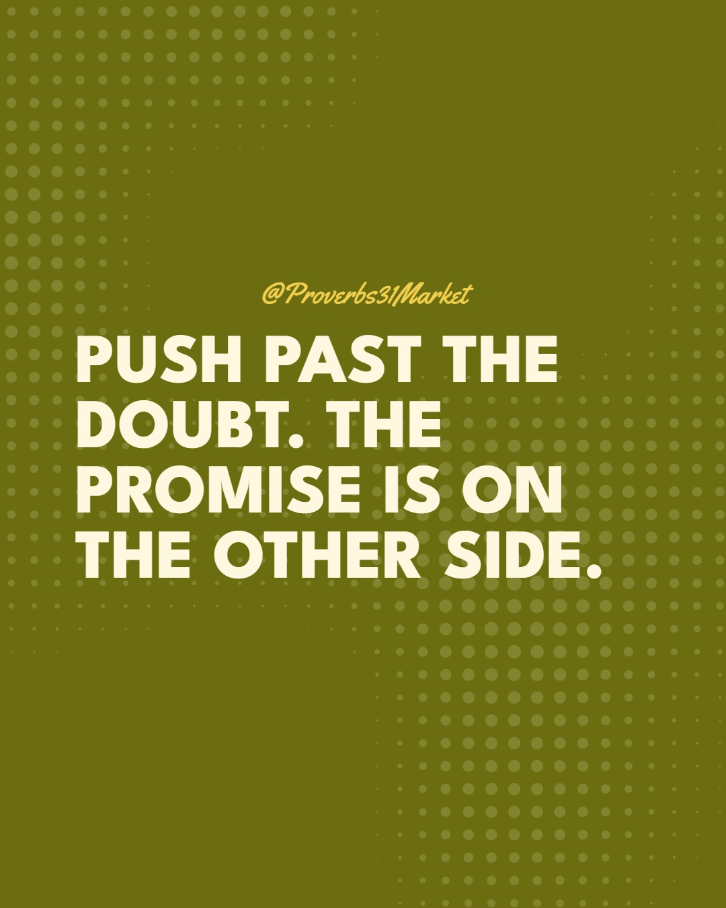
Thu, Nov 5, 5:30 PM ET
faith · olive · dots
Doubt is loud. The promise is louder. What promise are you holding on to right now? #P31Marketplace #Proverbs31Woman #FaithAndBusiness #KingdomEntrepreneur #ChristianWomenInBusiness #WomenWhoBuild
Doubt is loud. The promise is louder. What promise are you holding on to right now? #P31Marketplace #Proverbs31Woman #FaithAndBusiness #KingdomEntrepreneur